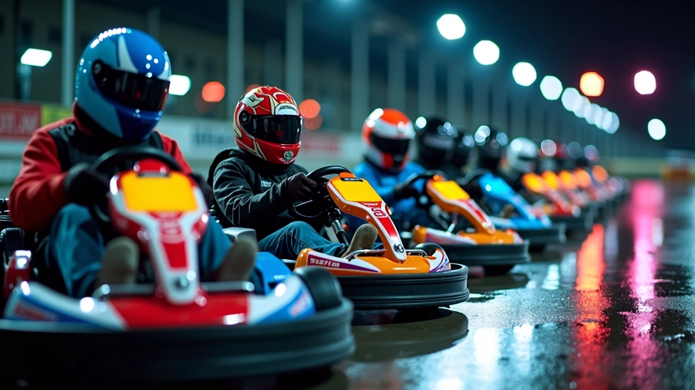
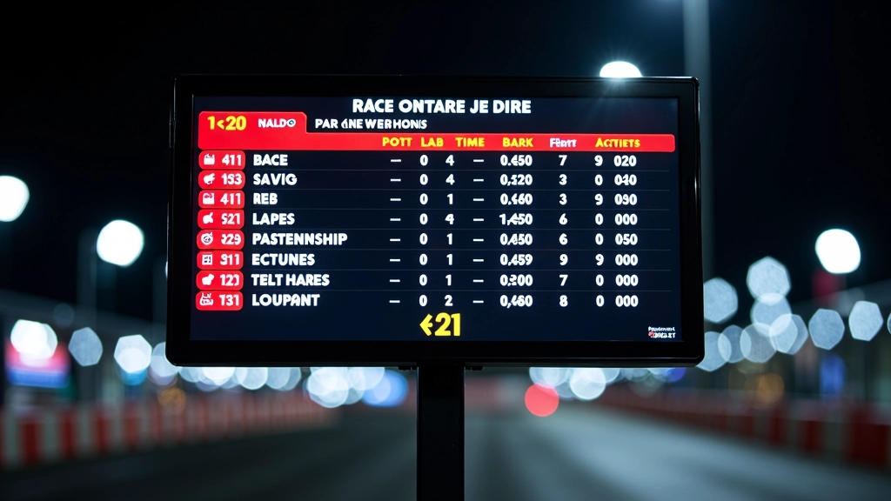
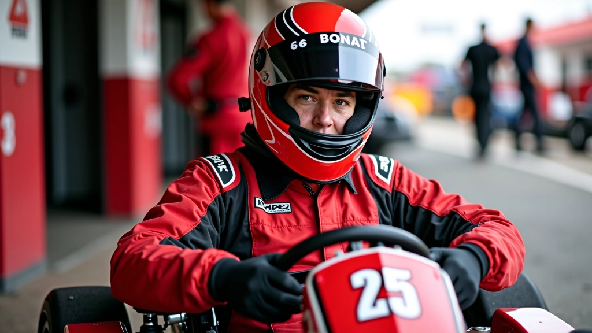
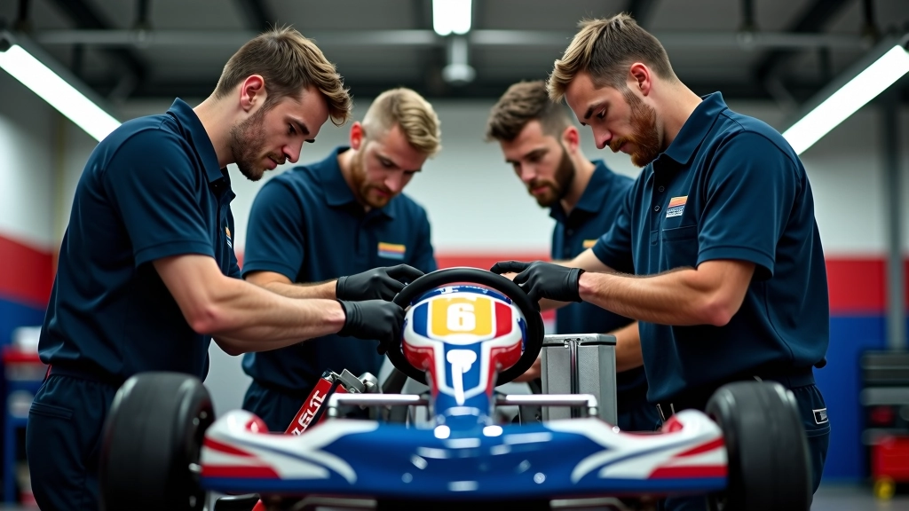

ما هي البطولات الموسمية؟
البطولات الموسمية في دوري الكارتينج ليست مجرد سباقات عادية. هذه فعاليات منظمة تجري على مدار العام بمراحل متعددة، وكل مرحلة تضيف نقاطاً لترتيب عام شامل. المتسابقون يتنافسون عبر عدة جولات، والأفضل أداءً يحصلون على نقاط تراكمية تحدد بطل الموسم في النهاية.
ما يميز هذه البطولات أنها تجمع بين المتعة والمنافسة الجادة. سواء كنت متسابقاً ناشئاً أو متقدماً، هناك برنامج مناسب لك. والحقيقة أن الكثيرين يشعرون بحافز أقوى عندما يكون هناك هدف واضح وترتيب رسمي.
أنواع البطولات الرئيسية
هناك عدة فئات من البطولات تناسب مستويات مختلفة. بطولة المبتدئين موجهة للأطفال من 8 إلى 11 سنة، وتركز على تعلم أساسيات القيادة الآمنة والتحكم بالكارت. بطولة الناشئين تستقبل المتسابقين من 12 إلى 15 سنة، وهنا تصعد مستويات المنافسة والسرعة.
البطولة المتقدمة مفتوحة للأعمار 16 فما فوق، وهذا هو المستوى الذي تشهد فيه أسرع الأوقات والمنافسات الحقيقية. كل فئة لها جدول منفصل وتصنيف خاص بها، ما يعني أن الجميع يتنافسون مع نظرائهم في المستوى ذاته.


نظام النقاط والترتيب
نظام النقاط هو قلب البطولة. المركز الأول يحصل على 25 نقطة، والثاني على 20، والثالث على 16، وهكذا تنازلياً. هذا يعني أن المشاركة المستمرة مهمة جداً — حتى لو لم تفز في جولة واحدة، يمكنك التعويض في الجولات التالية.
الترتيب النهائي يُحسب بجمع أفضل 10 نتائج من الموسم بأكمله. بعض المتسابقين يستبعدون سباقاً أو اثنين إذا كانت النتائج ضعيفة، لكن بشكل عام، الاستقرار والمشاركة المنتظمة هما المفتاح للفوز بالبطولة.
الفعاليات الخاصة والبطولات الكبرى
بجانب البطولة الموسمية العادية، هناك فعاليات خاصة تجذب انتباهاً إضافياً. السباق الليلي الذي يُقام مرة كل شهر يُعتبر من أشهر الفعاليات — تخيل القيادة تحت الأضواء الساطعة مع جمهور حاضر يشجع المتسابقين. هذا الجو مختلف تماماً عن السباقات العادية.
هناك أيضاً السباقات الفريقية حيث يتعاون ثلاثة متسابقين معاً، والسباقات الدولية التي تجمع فرقاً من مناطق مختلفة. هذه الفعاليات ليست جزءاً من الترتيب الموسمي الرسمي، لكنها توفر فرصاً عظيمة للتطور والتشبيك مع متسابقين آخرين.
كيفية الاستعداد للبطولات
الاستعداد ليس فقط عن السرعة. تحتاج إلى فهم خصائص الحلبة، والتدرب على البدايات السريعة، وإتقان المنحنيات الصعبة. معظم الفائزين يقضون ساعات إضافية على الحلبة قبل السباق الرسمي، ويدرسون فيديوهات سابقة للحلبة ذاتها.
من المهم أيضاً الاهتمام بالجانب النفسي. البطولات تحمل ضغطاً إضافياً، والتركيز والهدوء يصنعان الفرق. كثير من المتسابقين يعملون مع مدربين متخصصين يساعدونهم على تحسين التقنية والعقلية معاً.

نصائح أساسية للمتسابقين الجدد
- ابدأ بالحضور إلى سباقات التدريب قبل الدخول للبطولات الرسمية
- اختبر الكارت جيداً قبل اليوم الرسمي، وتأكد من معايرة العجلات والفرامل
- ركز على الاتساق بدلاً من السرعة القصوى في البداية
- تعلم من المتسابقين الأكثر خبرة واطلب نصائحهم
- حافظ على لياقتك البدنية — القيادة تتطلب جهداً أكثر مما تتوقع
الجدول الزمني للموسم
الموسم عادة يبدأ في مارس وينتهي في نوفمبر، بمجموع 10 جولات موزعة على 8 أشهر. هذا يعطي المتسابقين وقتاً كافياً للتدرب بين كل جولة. الفاصل بين الجولات يتراوح بين أسبوعين وثلاثة أسابيع، ما يسمح بالتحضير الجيد.
بطولة النهائيات تُقام عادة في أواخر نوفمبر، وهي تكون الحدث الأكبر في الموسم. أفضل 20 متسابقاً من كل فئة يتأهلون للنهائيات، وهناك مكافآت خاصة وجوائز كبيرة للفائزين. هذه اللحظة يتطلع إليها الجميع، وتمثل ذروة الموسم بأكمله.

دور الفريق الميكانيكي
الفريق الميكانيكي يلعب دوراً حاسماً في النجاح. هؤلاء الخبراء يعدّلون الكارت حسب ظروف الحلبة والطقس، ويتأكدون من أن كل شيء يعمل بكفاءة عالية. أحياناً، الفارق بين الفوز والخسارة يكون بسبب معايرة صحيحة للضغط على الإطارات أو زاوية التوجيه.
اختيار فريق ميكانيكي موثوق ومحترف يساعدك على التركيز على القيادة فقط. هم يهتمون بالتفاصيل الدقيقة التي قد لا يلاحظها المتسابق أثناء الضغط والتركيز على السباق.
الخلاصة والنصائح النهائية
البطولات الموسمية توفر إطاراً رسمياً وحافزاً قوياً للتطور كمتسابق. سواء كان هدفك الفوز بالبطولة أو ببساطة تحسين مستواك وقضاء وقت ممتع مع متسابقين آخرين، هناك برنامج مناسب لك.
ما يهم حقاً هو الالتزام والمشاركة المستمرة. لا تتوقع النتائج الكبرى فوراً — البطولات الناجحة تُبنى على أساس التدريب المنتظم والتعلم من كل سباق. استمتع بالعملية، تعلم من الأخطاء، واحتفل بالانتصارات الصغيرة. بمرور الوقت، سترى تحسناً واضحاً في مستواك وفي نتائجك.